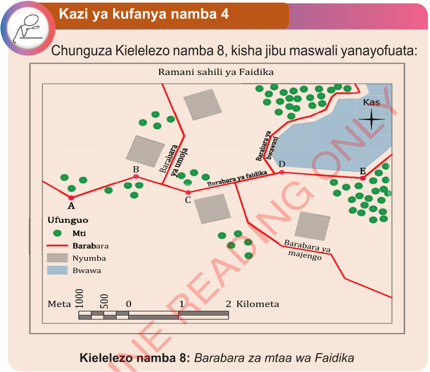

Kazi ya kufanya namba 4
Chunguza Kielelezo namba 8, kisha jibu maswali yanayofuata:

Maswali
Kwa kutumia kipande cha karatasi;
(a) Kokotoa umbali kutoka kituo B mpaka C.
(b) Kokotoa umbali kutoka kituo C mpaka E.
(c) Kokotoa umbali kutoka kituo A mpaka D.
(d) Kokotoa umbali kutoka kituo B mpaka E.
(e) Kokotoa urefu wa barabara ya Faidika kutoka kituo A hadi kituo E.
2.Kwa kutumia rula
Zifuatazo ni hatua za kubaini umbali katika ramani kwa kutumia rula.